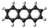

anthracene

Definition: Anthracene is a solid polycyclic aromatic hydrocarbon (PAH) of formula C14H10, consisting of three fused benzene rings. It is a component of coal tar. Anthracene is used in the production of the red dye alizarin and other dyes. Anthracene is colorless but exhibits a blue (400–500 nm peak) fluorescence under ultraviolet radiation.
Source: Wikipedia
Wikipedia Page
Wikidata Page